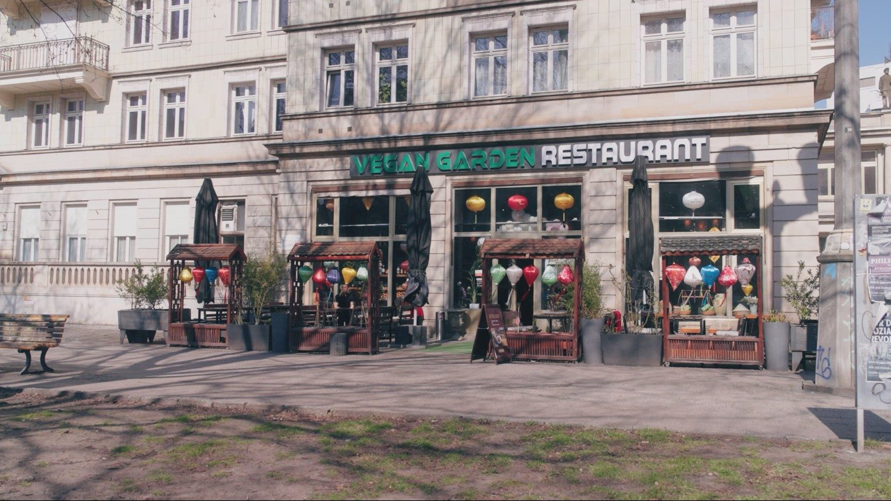

Gründerin von Vegan Garden Berlin – Expertin für vietnamesische Heilkräuter und 100 % vegane Kulinarik.

Veganes Frühstück Berlin Friedrichshain – Top Cafés & Restaurants
Wer morgens durch die lebendigen, baumbestandenen Straßen von Berlin-Friedrichshain schlendert, spürt sofort die kreative und tolerante Energie dieses einzigartigen Stadtteils. Für Food-Liebhaber und Ernährungsbewusste gibt es hier ein echtes kulinarisches Highlight: Ein gesundes, vitalstoffreiches und vor allem leckeres veganes frühstück berlin friedrichshain ist der ideale Weg, um mit voller Kraft in den Tag zu starten. Ob du Lust auf ein warmes, traditionelles Porridge hast, sündhaft cremige rein pflanzliche Donuts mit Kaffeespezialitäten probieren möchtest oder nach einem ausgiebigen, wärmenden asiatischen Spätfrühstück und Brunch aus der gesunden vietnamesischen Heilküche suchst – Friedrichshain bietet eine faszinierende Dichte an erstklassigen Cafés und Restaurants, die keine Wünsche offenlassen. In diesem umfassenden Kiez-Guide zeigen wir dir die besten Spots für dein perfektes Frühstückserlebnis und erklären die gesundheitlichen Vorteile eines rein pflanzlichen Starts in den Tag.
Friedrichshain: Das Paradies für ein veganes Frühstück in Berlin
Der Berliner Bezirk Friedrichshain hat sich in den letzten zwei Jahrzehnten zu einem der weltweit führenden Zentren für die pflanzliche Lebensweise entwickelt. Während vegetarische Optionen früher eine Randerscheinung waren, ist das rein pflanzliche Angebot heute ein fester und kreativer Bestandteil der täglichen Gastronomie. Besonders in den frühen Morgenstunden und zur Brunchzeit pulsiert der Kiez: Von hippen Third-Wave-Coffee-Shops bis hin zu gemütlichen asiatischen Oasen findet man hier Speisen, die Genuss und Tierwohl perfekt miteinander verbinden.
Die kreative Vielfalt im Boxhagener Kiez
Das Epizentrum des Friedrichshainer Frühstücksgeschehens liegt zweifellos rund um den Boxhagener Platz und die angrenzende Simon-Dach-Straße. Hier reihen sich individuelle Cafés aneinander, die sich gegenseitig mit innovativen Kreationen übertreffen. Ob hausgemachter Cashew-Käse auf Sauerteigbrot, glutenfreie Buchweizen-Pancakes mit Beerenkompott oder herzhafte Tofu-Scramble-Platten – die kulinarische Kreativität kennt keine Grenzen. Wenn du dich auf die Suche nach neuen Geschmackswelten begibst, hilft dir unser Vegan Guide für Berlin dabei, die versteckten Perlen des Kiezes abseits der ausgetretenen Touristenpfade zu entdecken.
Warum immer mehr Berliner auf ein pflanzliches Frühstück setzen
Die Entscheidung für ein veganes Frühstück ist für viele Berliner längst kein vorübergehender Trend mehr, sondern Ausdruck eines bewussten Lebensstils. Es geht um den bewussten Umgang mit den Ressourcen unseres Planeten und das Wohlbefinden des eigenen Körpers. Ein pflanzlicher Start in den Morgen belastet das Verdauungssystem deutlich weniger als ein schweres Frühstück mit Wurst und Eiern. Die Menschen schätzen das Gefühl von Leichtigkeit und Vitalität, das ein ausgewogenes Frühstück aus pflanzlichen Zutaten schenkt – und das ganz ohne Kompromisse beim Geschmack.
Die gesundheitlichen Vorteile eines rein pflanzlichen Frühstücks
Ein gesundes Frühstück bildet das Fundament für einen erfolgreichen und leistungsstarken Tag. Die moderne Ernährungswissenschaft zeigt immer deutlicher, dass eine pflanzenbetonte Kost dem Körper genau die Mikronährstoffe liefert, die er für geistige Klarheit und körperliche Ausdauer benötigt. Im Vergleich zu einer typisch westlichen Ernährung, die oft reich an gesättigten Fettsäuren und einfachem Zucker ist, bietet ein rein pflanzliches Frühstück langfristige Vorteile für den gesamten Stoffwechsel.
Ein häufiger Fehler beim Frühstück ist der Verzehr von einfachen Kohlenhydraten, wie sie in zuckerhaltigen Müslis oder weißem Gebäck vorkommen. Diese lassen den Blutzuckerspiegel rasch ansteigen, gefolgt von einem tiefen Sturz, der zu Heißhungerattacken und dem berüchtigten Vormittagstief führt. Komplexe Kohlenhydrate, wie sie in Haferflocken, Vollkorngetreide oder Hülsenfrüchten enthalten sind, werden vom Körper nur langsam abgebaut. Die Deutsche Gesellschaft für Ernährung (DGE) empfiehlt eine ballaststoffreiche, pflanzenbetonte Kost ausdrücklich, um den Blutzuckerspiegel stabil zu halten und das Risiko für chronische Stoffwechselerkrankungen langfristig zu senken ([1]).
Vitamine und sekundäre Pflanzenstoffe für den perfekten Start
Ein pflanzliches Frühstück, das reich an frischem Obst, Beeren, Nüssen und Samen ist, liefert eine Fülle an essenziellen Vitaminen, Antioxidantien und sekundären Pflanzenstoffen. Diese Verbindungen wirken im Körper als natürliche Schutzschilde gegen oxidativen Stress und unterstützen das Immunsystem. Nach den offiziellen Richtlinien der Weltgesundheitsorganisation (WHO) ist der reichliche Verzehr von Obst, Gemüse und pflanzlichen Proteinquellen eine der wichtigsten Präventionsmaßnahmen zum Schutz vor Zivilisationskrankheiten und zur Stärkung der allgemeinen Vitalität ([2]).
Gemütlicher Brunch mit vietnamesischen KöstlichkeitenGemütlicher Brunch mit vietnamesischen KöstlichkeitenGemütlicher Brunch mit vietnamesischen Köstlichkeiten
Top-Spots für veganes Frühstück Berlin Friedrichshain: Unsere Favoriten
Die Auswahl im Stadtteil Friedrichshain ist riesig, doch wir haben für dich die absolut besten Adressen herausgesucht, die durch Qualität, Geschmack und eine herzliche Atmosphäre überzeugen. Hier sind unsere Favoriten für das perfekte veganes frühstück berlin friedrichshain:
Vegan Garden Berlin – Der perfekte vietnamesische Spätfrühstücks- & Brunch-Spot
Auch wenn wir vom Vegan Garden Berlin erst ab 12:00 Uhr mittags unsere Türen öffnen, sind wir der ideale Anlaufpunkt für alle, die das Spätfrühstück, einen ausgiebigen Kiez-Brunch oder ein stärkendes, wärmendes Mittagsgericht lieben. In unser Restaurant in Berlin-Friedrichshain bringen wir das Beste aus der traditionellen vietnamesischen Esskultur in einer rein pflanzlichen Version auf deinen Teller. Wer sagt denn, dass man morgens nur Brot essen darf? In Vietnam ist eine dampfende Nudelsuppe wie die vegane Pho das klassische Frühstück schlechthin, da sie den Körper sanft aufweckt und mit wohliger Wärme füllt.
Ein Blick auf unsere Speisekarte oder direkt in unser digitales Menü unter unserer Speisekarte offenbart eine Fülle an nährstoffreichen Optionen: von knackigen Sommerrollen mit Bio-Tofu über exotische Mango-Salate bis hin zu wärmenden Suppen, die mit entzündungshemmenden Gewürzen wie frischem Ingwer, Zitronengras und Sternanis zubereitet werden. Es ist die perfekte Kombination aus asiatischer Heilküche und moderner, pflanzlicher Lebensart.
Silo Coffee – Spezialitätenkaffee und herzhafte vegane Stullen
Wer die klassische australische Frühstückskultur schätzt, kommt an Silo Coffee in der Gabriel-Max-Straße nicht vorbei. Dieses minimalistisch gestaltete Café ist berühmt für seinen exzellenten Third-Wave-Kaffee, der von lokalen Röstern bezogen wird. Veganer freuen sich über fantastische Frühstückskreationen wie gegrillte Sauerteigstullen mit cremiger Avocado, hausgemachtem Hummus, marinierten Wildpilzen und knackigem Saisongemüse. Die entspannte Kiez-Atmosphäre lädt dazu ein, den Morgen mit einem Buch oder bei guten Gesprächen zu verbringen.
Brammibal’s Donuts – Süßer Morgen im Kiez
Für all diejenigen, die den Tag am liebsten mit etwas Süßem und einem aromatischen Heißgetränk beginnen, ist die Friedrichshainer Filiale von Brammibal’s Donuts ein absoluter Pflichtbesuch. Als Pioniere der veganen Donuts in Deutschland zeigen sie, dass traditionelles Hefegebäck ganz ohne Butter, Milch und Eier unglaublich fluffig und lecker sein kann. Die Auswahl wechselt monatlich und reicht von klassischen Zimt-Zucker-Donuts bis hin zu spektakulären Kreationen mit Schokolade, Erdnussbutter oder Beerenfüllung – ideal für ein schnelles Frühstück to-go.
Haferkater – Traditionelles Porridge neu interpretiert
Direkt am Bahnhof Ostkreuz gelegen, bietet Haferkater die perfekte Lösung für Pendler und alle, die ein schnelles, gesundes und wärmendes Frühstück suchen. Das Konzept basiert auf frisch gequetschten Haferflocken, die nur mit Wasser und einer Prise Salz zu einem cremigen Porridge gekocht werden. Die veganen Varianten werden mit köstlichen Toppings wie Beerenkompott, Nüssen, Bananen, Ahornsirup oder hausgemachtem Granola verfeinert. Hafer ist extrem nährstoffreich, reich an Beta-Glucanen und sorgt für eine langanhaltende Sättigung ohne Schweregefühl.
Lust auf frische, gesunde vietnamesische Küche?
Besuche uns im Herzen von Berlin-Friedrichshain und genieße authentische vegane Spezialitäten!
Die vietnamesische Frühstückskultur: Gesund und erwärmend
In vielen asiatischen Ländern, insbesondere in Vietnam, unterscheidet sich das Frühstück grundlegend von den westlichen Gewohnheiten. Statt kalter Brötchen mit süßem Aufstrich oder Müsli mit kalter Milch setzt die traditionelle vietnamesische Heilkunst am Morgen auf warme, flüssige Mahlzeiten. Diese Tradition entspringt einem tiefen Verständnis für die energetischen Abläufe im menschlichen Körper und die Schonung unserer Verdauungsorgane.
Warum warme Suppen am Morgen die Verdauung schonen
Nach den Lehren der traditionellen fernöstlichen Medizin ist die Verdauung wie ein kleines Feuer, das Nahrung transformiert. Kalte oder schwer verdauliche Lebensmittel am Morgen können dieses Verdauungsfeuer schwächen und zu Trägheit oder Blähungen führen. Eine warme, leicht verdauliche Nudelsuppe spendet dem Körper sofort Feuchtigkeit, regt die Durchblutung an und liefert sanfte Energie. Wissenschaftliche Studien der Harvard Health Publishing bestätigen, dass warme, flüssigkeitsbasierte Mahlzeiten die Magenentleerung erleichtern und den Magen-Darm-Trakt besonders schonend aktivieren ([3]).
Die Rolle von Ingwer und Kräutern in der vietnamesischen Heilkunst
Das Geheimnis der vietnamesischen Küche liegt in der gezielten Verwendung von Gewürzen und frischen Wildkräutern, die eine stark therapeutische Wirkung haben. Ingwer und Zitronengras wirken entzündungshemmend und wärmend von innen heraus. Wenn du bei uns speist, verwenden wir ausschließlich frische vietnamesische Kräuter und Zutaten wie thailändischen Koriander (Rau Răm), Perillablätter (Tía Tô) und Minze. Diese Kräuter enthalten ätherische Öle, die die Magensaftproduktion anregen, Blähungen vorbeugen und die Nährstoffaufnahme optimieren ([4]). Wer diese aromatischen Geschmackswelten selbst in der eigenen Küche ausprobieren möchte, findet unter vegane vietnamesische Rezepte viele Anregungen, um traditionelle pflanzliche Gerichte ganz einfach zu Hause zuzubereiten.
Frischer Eistee und FrühstücksgetränkeFrischer Eistee und FrühstücksgetränkeFrischer Eistee und Frühstücksgetränke
Tipps für deinen perfekten veganen Brunch in Friedrichshain
Damit dein Frühstücks- oder Brunchausflug in Friedrichshain zu einem rundum entspannten Erlebnis wird, lohnt es sich, ein paar Tipps zu beherzigen. Die Beliebtheit des Stadtteils führt dazu, dass die besten Spots am Wochenende schnell voll werden. Mit der richtigen Planung verhinderst du lange Wartezeiten und kannst deinen freien Tag in vollen Zügen genießen.
Reservierung und Timing am Wochenende
Besonders samstags und sonntags zwischen 10:00 und 14:00 Uhr sind die beliebten Cafés rund um den Boxhagener Platz extrem gut besucht. Wenn du mit einer größeren Gruppe oder Familie frühstücken möchtest, ist eine rechtzeitige Reservierung unerlässlich. Viele Cafés bieten Online-Buchungssysteme an. Für Spontane empfiehlt es sich, entweder sehr früh (vor 09:30 Uhr) oder etwas später als typischer Spätbrunch (ab 13:30 Uhr) aufzuschlagen. So entgehst du dem größten Trubel und genießt einen aufmerksameren Service.
Veganes Frühstück in Friedrichshain to-go für den Park
An warmen Frühlingstagen und im Sommer gibt es kaum etwas Schöneres, als das Frühstück im Freien zu genießen. Friedrichshain bietet dafür fantastische Grünflächen wie den Volkspark Friedrichshain oder den Boxhagener Platz. Viele Cafés haben sich auf den Außerhausverkauf spezialisiert und packen dir deine Bowls, Donuts, Sandwiches und Kaffeespezialitäten in umweltfreundliche, kompostierbare Verpackungen ein. Schnapp dir eine Picknickdecke, hole dir dein Lieblingsessen to-go und genieße die Berliner Morgensonne im Grünen.
Nachhaltigkeit auf dem Frühstücksteller
Nachhaltigkeit ist für uns kein Modewort, sondern eine Lebenseinstellung. Die Berliner Gastronomie hat eine Vorreiterrolle eingenommen, wenn es darum geht, Umweltschutz und Genuss im Alltag zu vereinen. Ein veganes Frühstück leistet bereits einen enormen Beitrag zur Verringerung des ökologischen Fußabdrucks, da die Produktion pflanzlicher Lebensmittel weitaus weniger Ressourcen beansprucht als die Tierhaltung.
Regionale Bio-Zutaten und ihre ökologische Bilanz
Der Fokus auf regionale und saisonale Bio-Produkte ist entscheidend für den Schutz unseres Klimas. Kurze Transportwege aus dem Umland von Brandenburg sorgen dafür, dass Obst und Gemüse reif geerntet werden und ihren vollen Nährstoffgehalt behalten. In unserer eigenen Küche legen wir großen Wert auf diesen Kreislauf. Unter Nachhaltigkeit und unsere Philosophie kannst du im Detail nachlesen, wie wir durch faire Partnerschaften mit ökologischen Erzeugern und den Verzicht auf künstliche Zusatzstoffe ein gesundes, zukunftsfähiges Gastro-Konzept realisieren.
Plastikvermeidung und Zero-Waste-Ansätze in Berliner Cafés
Neben den Zutaten spielt auch die Vermeidung von Müll eine zentrale Rolle. Viele Cafés in Friedrichshain setzen auf Mehrwegsysteme für den Kaffee-to-go, verzichten komplett auf Plastikstrohhalme und verwerten Lebensmittelreste konsequent weiter. Einige Pioniere arbeiten sogar nach dem Zero-Waste-Prinzip, bei dem im gesamten Produktionsprozess so gut wie kein Abfall entsteht. Als Gast kannst du diese Bewegung unterstützen, indem du deinen eigenen Becher mitbringst oder vor Ort im gemütlichen Ambiente der Cafés speist.
Lust auf frische, gesunde vietnamesische Küche?
Besuche uns im Herzen von Berlin-Friedrichshain und genieße authentische vegane Spezialitäten!
Wenn du die faszinierende Verbindung aus traditioneller asiatischer Heilküche und moderner, rein pflanzlicher Ernährung selbst erleben möchtest, laden wir dich herzlich ein, uns im Herzen von Friedrichshain zu besuchen. Unser einladend gestaltetes Restaurant bietet dir die perfekte Oase, um in entspannter Atmosphäre gesunde Köstlichkeiten zu genießen und neue Lebensenergie zu tanken.
Unsere Empfehlung für deinen nächsten Kiez-Brunch
Für ein perfektes kulinarisches Erlebnis zur Mittags- und Brunchzeit empfehlen wir dir, verschiedene Gerichte zu teilen, um die Vielfalt unserer Küche kennenzulernen. Beginne mit einer leichten Vorspeise wie unseren knackigen Sommerrollen mit frischer Minze und cremigem Erdnuss-Dip. Wähle anschließend eine unserer wärmenden Nudelsuppen wie die klassische Pho oder die kaiserliche Bun Bo Hue, die mit mariniertem Bio-Tofu, Austernpilzen und einer Vielzahl von Heilkräutern serviert wird. Dazu passt hervorragend ein hausgemachter Eistee oder ein traditioneller vietnamesischer Kaffee mit Kokosmilch. Wir freuen uns darauf, dich bei uns verwöhnen zu dürfen!
📍 Besuche Vegan Garden Berlin
Adresse: Frankfurter Allee 21, 10247 Berlin (Friedrichshain)
Öffnungszeiten: Dienstag bis Sonntag: 12:00 – 22:00 Uhr (Montag Ruhetag)
Ein ausgiebiges veganes frühstück berlin friedrichshain ist weit mehr als nur die erste Mahlzeit des Tages – es ist ein echtes Lebensgefühl und der Schlüssel zu langanhaltender Gesundheit und Vitalität. Friedrichshain beweist mit seiner lebendigen Kiez-Kultur und der enormen kulinarischen Vielfalt, wie unkompliziert, bunt und genussvoll ein pflanzlicher Start in den Tag sein kann. Von wärmenden Hafer-Porridges und süßen Donut-Sünden über Third-Wave-Kaffeespezialitäten bis hin zu unserer nährstoffreichen vietnamesischen Spätbrunch-Heilküche bietet der Kiez für jeden Geschmack das passende Highlight. Tue deinem Körper etwas Gutes, unterstütze nachhaltige Gastronomiekonzepte und lass dich von der Fülle an Aromen inspirieren. Besuche uns im Vegan Garden Berlin, reserviere deinen Tisch und erlebe die wohltuende Kraft unserer authentischen, pflanzlichen Küche!
Zuletzt aktualisiert: 26.05.2026 um 20:58 Uhr
Wissenschaftliche Quellen:
[1] Deutsche Gesellschaft für Ernährung (DGE). (2024). Pflanzenbetonte Ernährung: Richtungsweisend für Gesundheit und Umwelt. DGE-Positionspapier. https://www.dge.de/
[2] World Health Organization (WHO). (2020). Healthy diet. WHO Fact Sheet. https://www.who.int/
[3] Harvard Health Publishing. (2023). Warm breakfasts and stomach emptying: The benefits of warm foods on the digestive tract. Harvard Medical School. https://www.health.harvard.edu/
[4] National Center for Biotechnology Information (NCBI). (2022). Antioxidant, antimicrobial, and anti-inflammatory properties of culinary herbs and spices. PubMed. https://pubmed.ncbi.nlm.nih.gov/